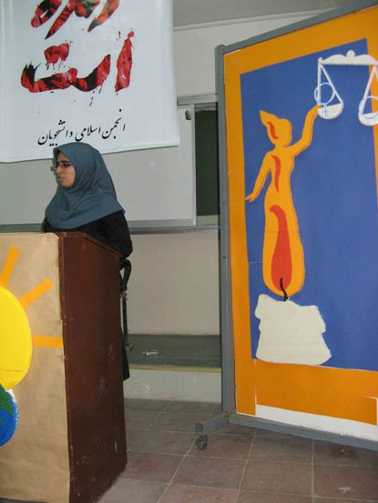
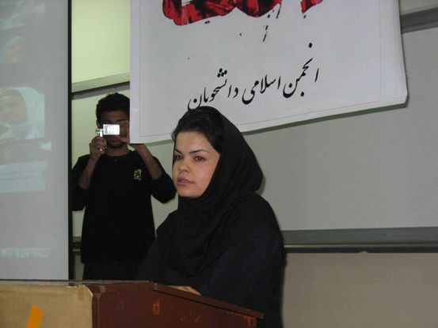
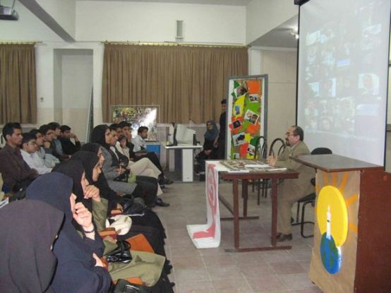
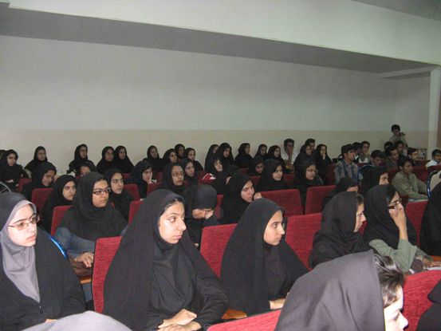
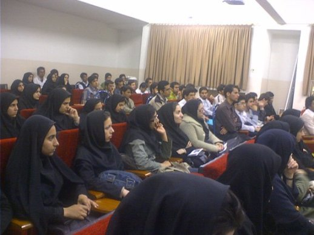
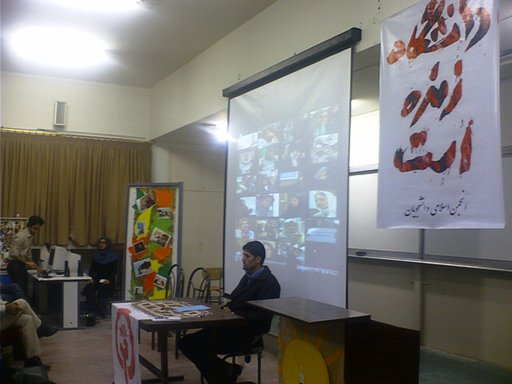
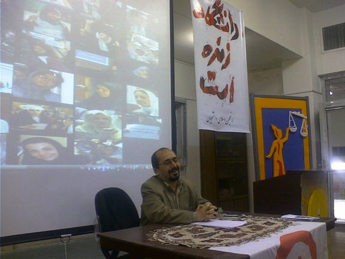

|
|
گزارش تصویری مراسم بزرگداشت 8 مارس در دانشگاه سيستان و بلوچستان
عکاس : علی عابدی
شنبه18 اسفند 1386
شب گذشته انجمن اسلامي دانشكده هاي فني مهندسي و علوم پايه ميزبان دانشجويان و اساتيد جهت برگزاري مراسم 8 مارس براي سومين سال پياپي بود.
گرچه ميزبانان مراسم توانسته بودند تنها مجوز سخنراني يك نفر از سخنرانان خود را دريافت کنند اما مسئولين دانشگاه از در اختيار قرار دادن آمفي تئاتر خودداري نمودند كه در نهايت انجمن اسلامي دانشجويان تصميم به برگزاري مراسم در اتاق كنفرانس را گرفت.
اين مراسم با سخنراني دكتر بريماني و اشكان آذر كيش آغاز گشت و در ادامه با پخش سه كلبپ و بررسي وضعيت جنبش زنان و فشار هاي موجود بر فعالين اين جنبش و ارائه گزارشي از جلسات مستمردو ساله كميته زنان انجمن اسلامي دانشكده هاي فني مهندسي و علوم پايه پيگيري شد و در پايان با پخش فيلم مستند مهتاب و قرائت قطعنامه خاتمه يافت.






